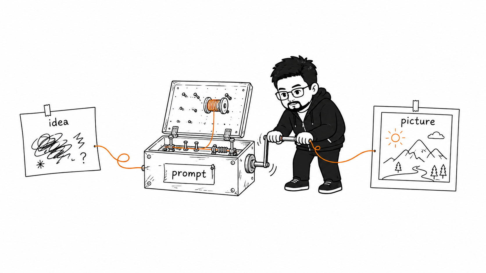
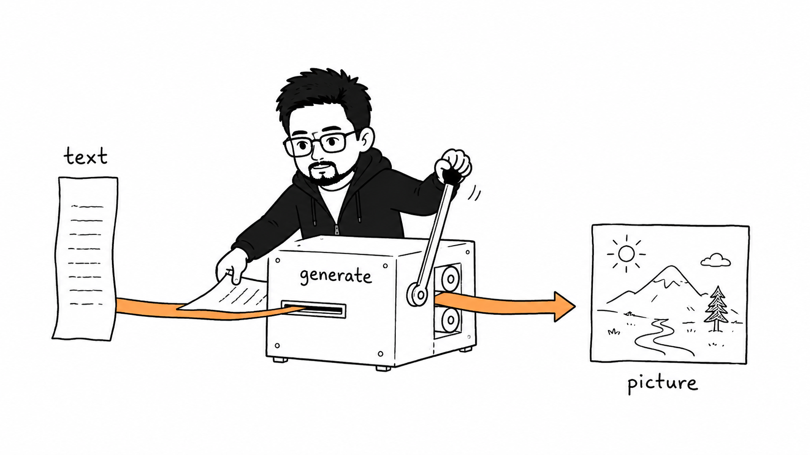
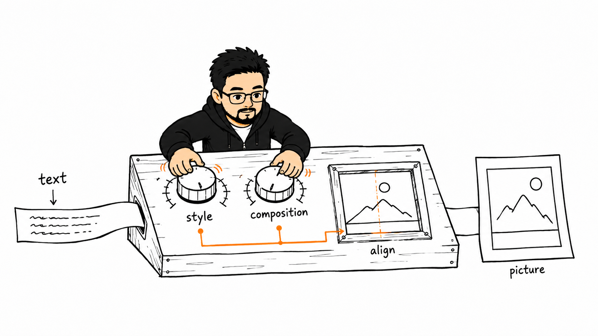
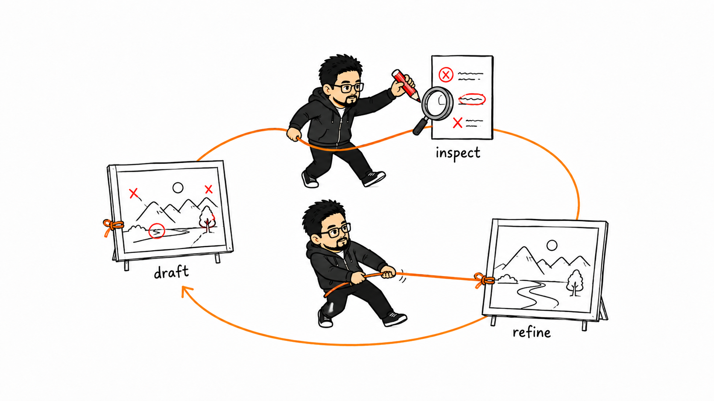
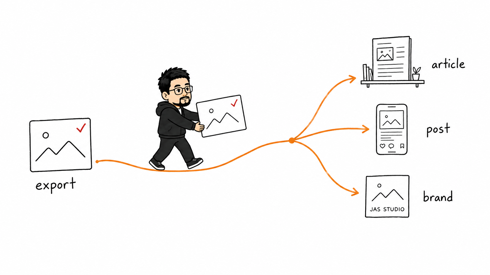
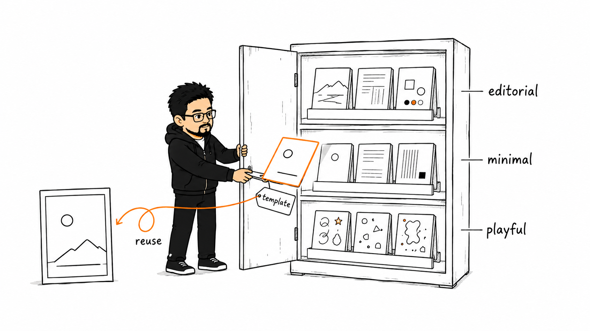

<title>ZhiPhoto — Image generation skill for Codex</title>
<meta charset="UTF-8">
<meta name="viewport" content="width=device-width, initial-scale=1.0">
<meta name="description" content="ZhiPhoto is an extensible Codex skill for composing image prompts, generating images with image_gen, exporting the result, and verifying it locally.">
<style>
  :root {
    --ink: #1a1a1a;
    --paper: #ffffff;
    --orange: #e8641c;
    --muted: #6b6b6b;
    --hairline: #e6e6e6;
    --font: -apple-system, "Segoe UI", Inter, sans-serif;
  }

  * { box-sizing: border-box; }

  html, body {
    margin: 0;
    padding: 0;
    background: var(--paper);
    color: var(--ink);
    font-family: var(--font);
    overflow-x: hidden;
  }

  body {
    line-height: 1.5;
  }

  img {
    max-width: 100%;
  }

  a {
    color: var(--orange);
  }

  .wrap {
    max-width: 1080px;
    margin: 0 auto;
    padding: 0 24px;
  }

  /* Hero */

  header.hero {
    padding: 64px 0 48px;
    text-align: center;
  }

  .brand {
    display: flex;
    align-items: center;
    justify-content: center;
    gap: 12px;
    margin-bottom: 40px;
  }

  .brand img {
    width: 36px;
    height: 36px;
    display: block;
  }

  .brand span {
    font-size: 18px;
    font-weight: 600;
    letter-spacing: 0.02em;
  }

  h1 {
    font-size: clamp(28px, 6vw, 48px);
    line-height: 1.15;
    font-weight: 700;
    margin: 0 auto 20px;
    max-width: 780px;
    letter-spacing: -0.01em;
  }

  .subhead {
    font-size: clamp(16px, 2.6vw, 19px);
    color: var(--muted);
    max-width: 620px;
    margin: 0 auto 32px;
  }

  .cta {
    display: inline-block;
    background: var(--orange);
    color: #fff;
    text-decoration: none;
    font-weight: 600;
    font-size: 16px;
    padding: 14px 30px;
    border-radius: 4px;
  }

  .cta:hover {
    background: #d1590f;
  }

  .hero-image {
    margin: 56px auto 0;
    max-width: 820px;
  }

  .hero-image img {
    width: 100%;
    height: auto;
    display: block;
  }

  .hero-image figcaption {
    margin-top: 12px;
    font-size: 14px;
    color: var(--muted);
    text-align: center;
  }

  figure {
    margin: 0;
  }

  /* Feature grid */

  section.features {
    padding: 56px 0 64px;
    border-top: 1px solid var(--hairline);
  }

  .features h2 {
    font-size: clamp(22px, 4vw, 28px);
    font-weight: 700;
    text-align: center;
    margin: 0 0 48px;
  }

  .grid {
    display: grid;
    grid-template-columns: 1fr 1fr;
    gap: 40px 32px;
  }

  .grid figure img {
    width: 100%;
    height: auto;
    display: block;
  }

  .grid figcaption {
    margin-top: 14px;
    font-size: 15px;
    color: var(--ink);
  }

  .grid figcaption .num {
    color: var(--orange);
    font-weight: 700;
    margin-right: 6px;
  }

  @media (max-width: 720px) {
    .grid {
      grid-template-columns: 1fr;
    }
  }

  /* Install */

  section.install {
    padding: 56px 0 64px;
    border-top: 1px solid var(--hairline);
  }

  section.install h2 {
    font-size: clamp(22px, 4vw, 28px);
    font-weight: 700;
    text-align: center;
    margin: 0 0 28px;
  }

  pre {
    background: #f7f7f5;
    border: 1px solid var(--hairline);
    border-radius: 4px;
    padding: 20px 24px;
    max-width: 640px;
    margin: 0 auto;
    overflow-x: auto;
  }

  pre code {
    font-family: ui-monospace, SFMono-Regular, Menlo, Consolas, monospace;
    font-size: 14px;
    line-height: 1.7;
    color: var(--ink);
    white-space: pre;
  }

  /* Footer */

  footer {
    border-top: 1px solid var(--hairline);
    padding: 32px 0 48px;
  }

  footer .wrap {
    max-width: 720px;
  }

  footer p {
    font-size: 13px;
    color: var(--muted);
    margin: 6px 0;
  }

  footer a {
    color: var(--muted);
    text-decoration: underline;
  }
</style>

<header class="hero">
  <div class="wrap">
    <div class="brand">
      
      <span>ZhiPhoto</span>
    </div>
    <h1>Compose, generate, and verify images with Codex.</h1>
    <p class="subhead">
      ZhiPhoto is an extensible Codex skill that turns a prompt into a rendered, saved,
      and verified image through Codex's built-in image generation — or prepares a local,
      offline prompt page for a human-run batch.
    </p>
    <a class="cta" href="https://github.com/zhi-ai-lab/zhiphoto">View on GitHub</a>

    <figure class="hero-image">
      
      <figcaption>From a loose idea to a well-formed prompt and a clean generated image.</figcaption>
    </figure>
  </div>
</header>

<section class="features">
  <div class="wrap">
    <h2>What it does</h2>
    <div class="grid">
      <figure>
        
        <figcaption><span class="num">01</span>Idea to image — turns a rough, loose idea into a well-formed prompt and a clean generated image.</figcaption>
      </figure>
      <figure>
        
        <figcaption><span class="num">02</span>Text to image — turns a short text brief directly into a picture.</figcaption>
      </figure>
      <figure>
        
        <figcaption><span class="num">03</span>Control style and composition — two dedicated dials, style and composition, instead of a random result.</figcaption>
      </figure>
      <figure>
        
        <figcaption><span class="num">04</span>Iterate toward a better result — a draft, inspect, refine loop that resolves corrections into a clean final image.</figcaption>
      </figure>
      <figure>
        
        <figcaption><span class="num">05</span>Put the output into content — routes a verified image into where it's actually used: an article, a social post, a brand asset shelf.</figcaption>
      </figure>
      <figure>
        
        <figcaption><span class="num">07</span>Multiple style-template collections — several reusable photo-style collections that keep expanding without losing structure.</figcaption>
      </figure>
    </div>
  </div>
</section>

<section class="install">
  <div class="wrap">
    <h2>Install</h2>
    <pre><code>codex plugin marketplace add zhi-ai-lab/zhiphoto
codex plugin add zhiphoto@zhi-ai-lab</code></pre>
  </div>
</section>

<footer>
  <div class="wrap">
    <p>ZhiPhoto is owned and maintained by zhi-ai-lab, released under the Apache License 2.0.</p>
    <p>Independent project — not affiliated with or endorsed by OpenAI. ChatGPT and OpenAI names are used only to describe interoperability.</p>
    <p>The article-illustration style adapts guidance from Ian Xiaohei Illustrations (<a href="https://github.com/helloianneo/ian-xiaohei-illustrations">github.com/helloianneo/ian-xiaohei-illustrations</a>) — thanks to Ian for the original work.</p>
    <p>Maintained by <a href="https://x.com/jason_shen_2000">Jason Shen on X</a>.</p>
  </div>
</footer>
